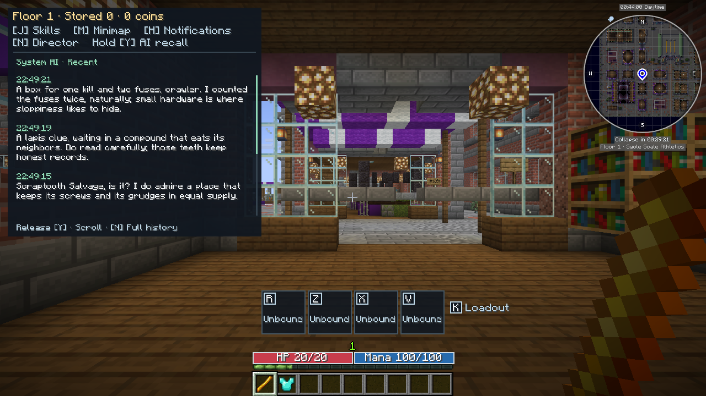
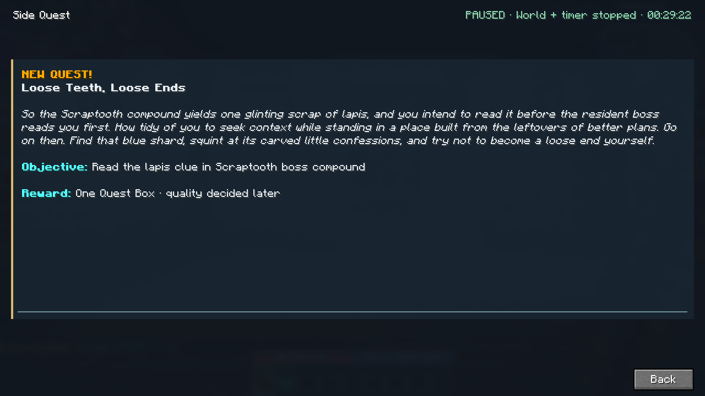
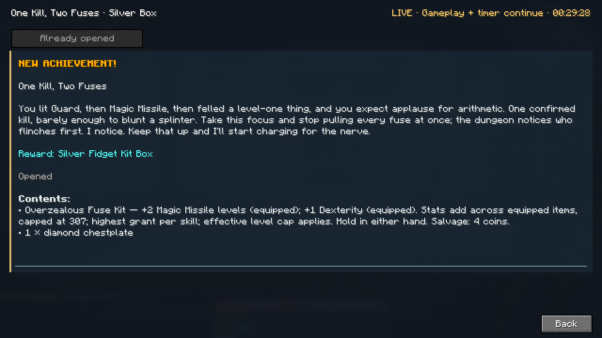
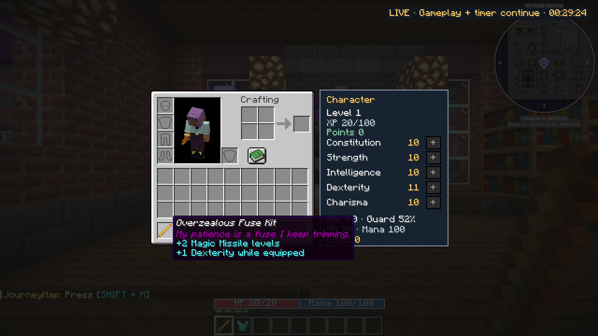
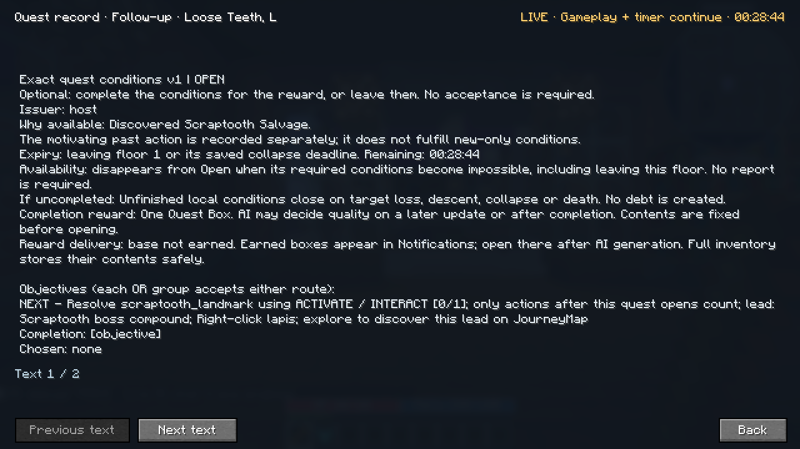
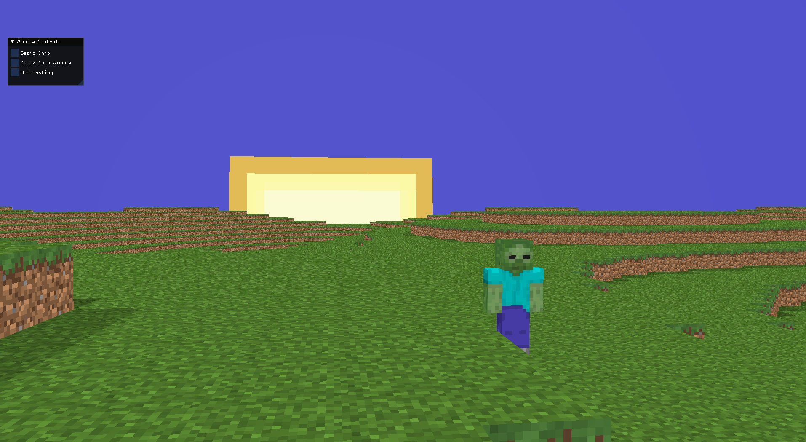
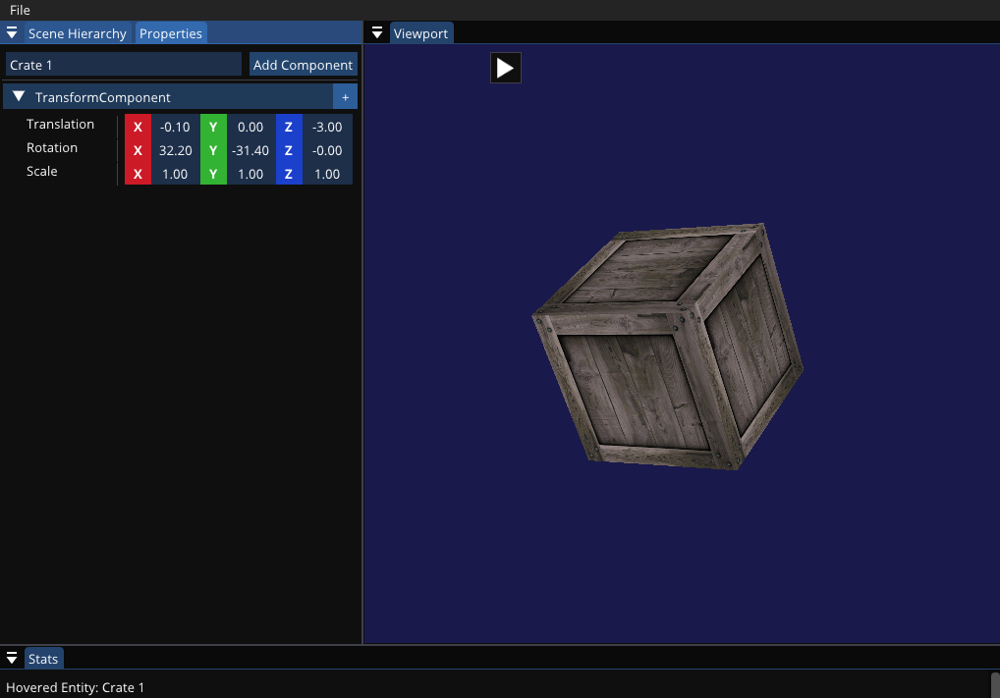
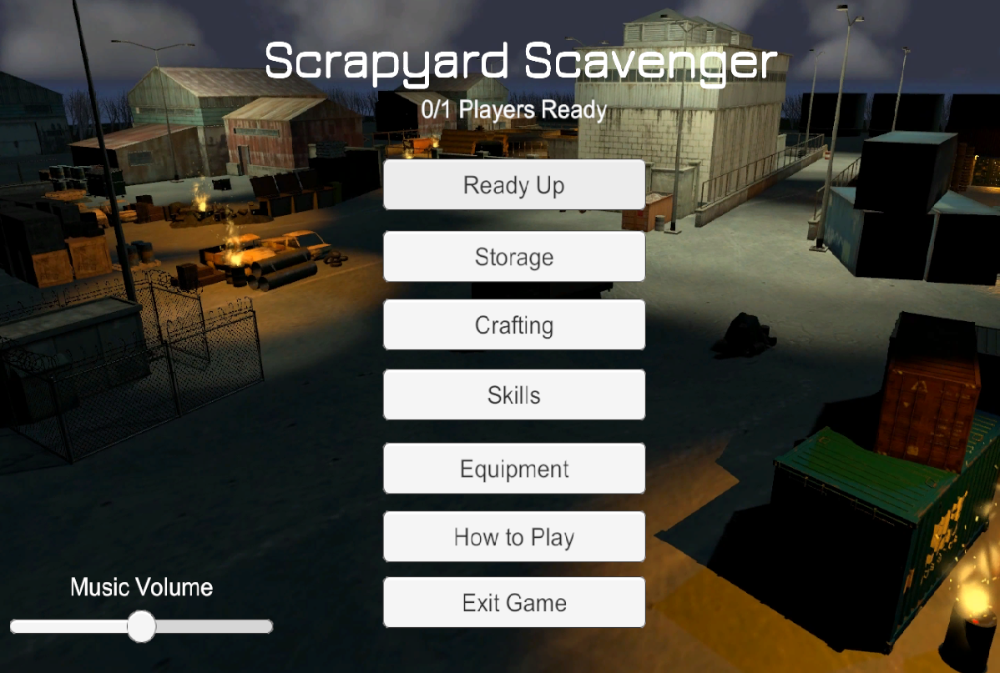
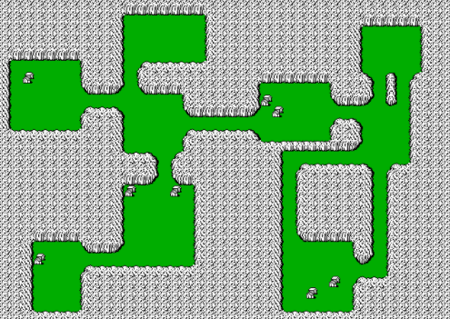
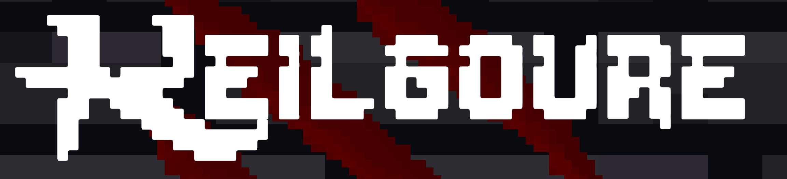

Warzone
Ranked
Contributed to Warzone’s Ranked feature.
Competitive playI’m Brendan, a game developer with experience on Call of Duty: Warzone and a particular interest in generative AI for game development.
Contributed to Warzone’s Ranked feature.
Competitive playWorked on Warzone’s infiltration and exfiltration systems.
Gameplay systemsBuilt internal tooling for Warzone playtesting.
Developer toolsA single-player dungeon RPG inside Minecraft, inspired by Matt Dinniman’s LitRPG series Dungeon Crawler Carl. Survival, spectacle, and your relationship with the dungeon’s AI host shape the experience.
The Living AI Director is an opinionated host with a persistent personality and campaign memory. It uses generative AI to shape each floor’s story, react to your choices, and adapt encounters you have yet to discover.
The System AI has a persistent personality, but its opinion of you can change. The tactics you repeat and the choices you make become part of your shared history, giving its sarcasm, grudging respect, and later callbacks something personal to draw on.
That relationship is grounded in confirmed gameplay. The host’s identity, changing attitude, and supporting events are saved separately, so a new remark doesn’t rewrite what happened—and a different approach can give it reason to reconsider.

A discovery, close call, or unusual tactic can become the starting point for an optional quest. The AI chooses an objective from the dungeon’s available interactions and gives it a title, introduction, and voice of its own.
Those objectives refer to real places, enemies, and objects. Before a quest appears, the game checks its targets, prerequisites, remaining time, and ownership. A past accomplishment can inspire the next challenge; it cannot automatically complete it.

The AI can recognize an unusual combination of actions with an original achievement, beyond a fixed checklist. It decides whether the moment deserves an award, then delivers its verdict with a punchline, a mock accolade, or backhanded praise.
Rewards can include custom equipment with original names, flavor, and useful properties. Recent actions, practiced skills, and current gear inform the selection: a utility-focused player can receive different bonuses from a ranged or support build. The game validates each allocation, saves the box’s contents, and ensures that opening it cannot pay out twice.


I chose Minecraft with NeoForge for its broad event bus: native hooks into the player’s actions and the surrounding world. Confirmed events feed the Director’s memory and give its decisions context.
The model proposes actions through a supported vocabulary. Game code checks whether they are legal in the current state before committing them. This gives the host room to improvise while preserving active fights, completed objectives, and earned rewards. Delayed responses are checked again so an old proposal cannot change a run that has moved on.
Every session records how the Director responds. An in-game event log and a local experiment workbench let me follow the evidence behind a request, inspect the model’s response, and see why the game accepted, repaired, or rejected it.
The workbench brings together request history, retries, latency, and reported usage and cost. That makes it possible to investigate both engineering failures and creative problems, such as a host that keeps repeating the same joke. Successful generation and successful reward delivery are tracked separately.

An early-floor enemy, built entirely with AI. Its model, textures, rigging, and animations are all generated as part of our custom asset pipeline.
That pipeline runs from Blockbench through GeckoLib into Minecraft, bringing custom creatures into the dungeon. Here, the Scraptooth Goblin shows off its generated walk cycle.
Recurring NPCs with distinct goals, relationships, and knowledge—characters who can remember your help, disagree with the host, and want different outcomes.
Negotiation that changes supported quest terms, services, or rewards, with explicit commitments the game can enforce and characters can remember.
Director control over future enemy levels: easier encounters, harder optional threats, or stronger rivals, within defined limits that preserve revealed enemies and active fights.

A voxel engine built around responsive multiplayer, efficient chunk meshing, and background world generation.
Explore the engine
A custom game engine and editor built to explore faster iteration, hot-reloadable game code, and component-driven tooling.
Inside the editor
A multiplayer FPS built by a seven-person team. I led the team and worked on movement, networking, and gameplay systems.
See my contributions
A dungeon generator inspired by Pokémon Mystery Dungeon, combining randomized rooms, graph algorithms, and tile-based hallways.
Explore the generator
Play as the monster defending an ever-changing dungeon from a looting hero. Defeat other monsters to take their abilities and protect your crypt.
Created with Gary O’Brien, John Rosner, and Dillon Zaugg.
Download on itch.ioI’m a game developer interested in the systems behind a great player experience. My work spans multiplayer gameplay, custom engines, and tools for the people making games.
I’m especially interested in GenAI as both a development tool and part of the player experience. My Minecraft RPG explores a Living AI Director with a persistent personality and memory, creating personal quests, distinctive rewards, and meaningful reactions to how you play.
I graduated from NC State University in 2020 with a B.S. in Computer Science and a concentration in Game Development.
Find me on LinkedIn